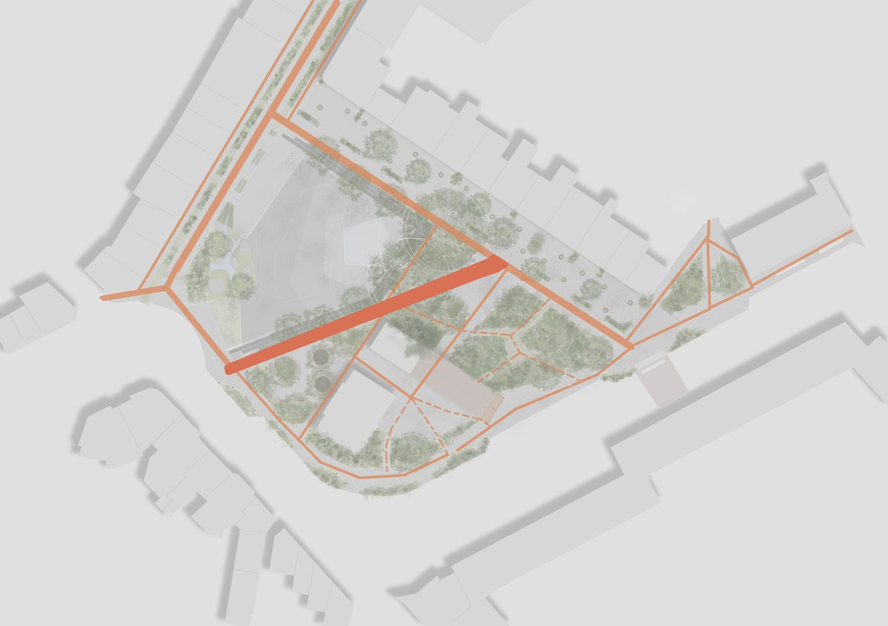
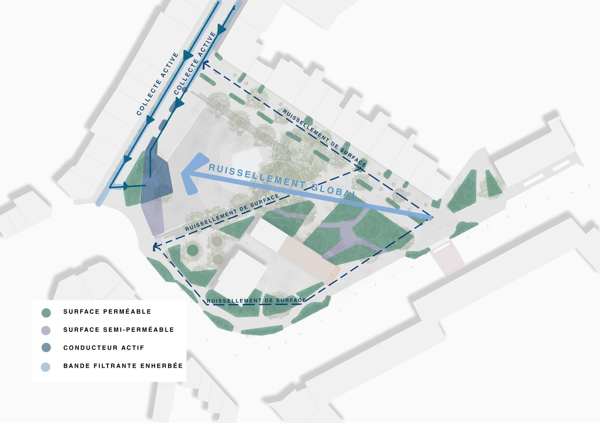
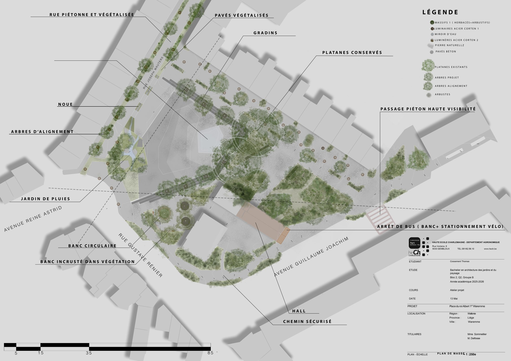
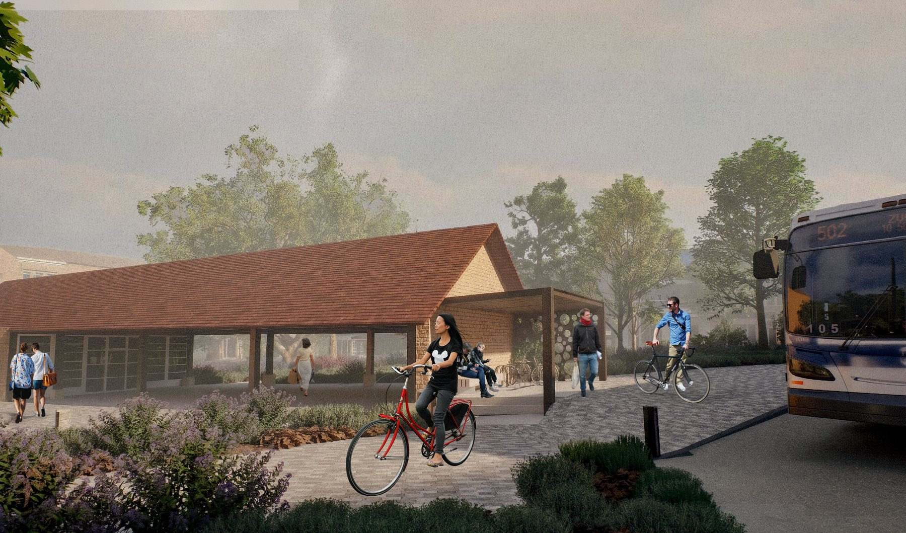
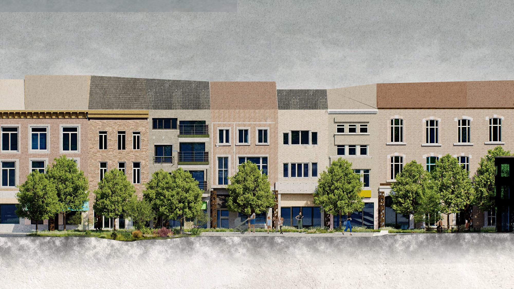
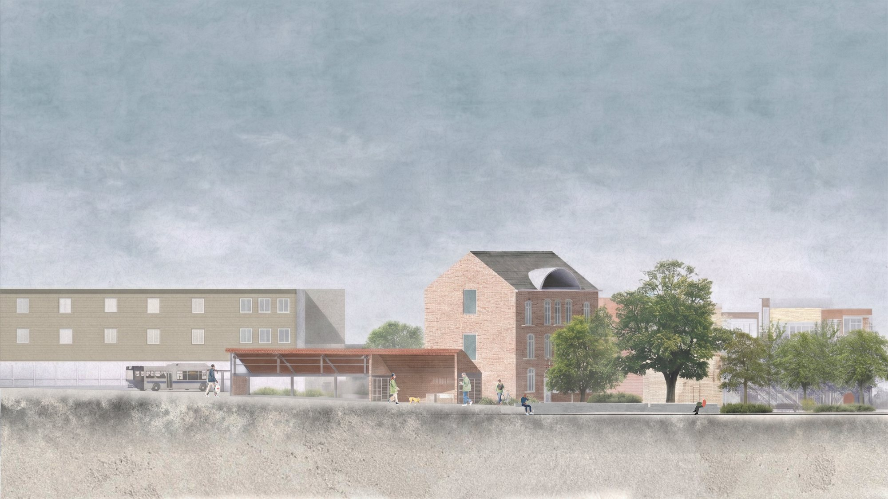
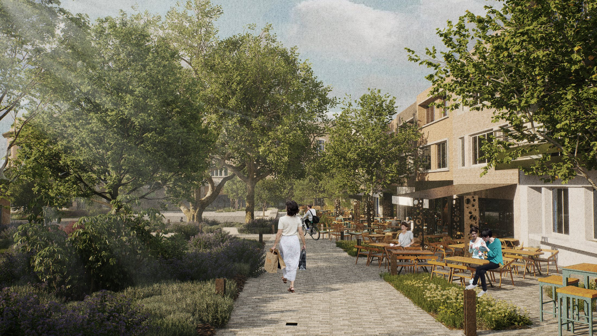

Confluant
Né d'un constat simple : Waremme tourne le dos à ses flux — l'eau, les mobilités, les usagers. Le projet fait de cette confluence une force structurante.
- Lieu
- Place du Roi Albert 1er, Waremme
- Contexte
- Projet d'atelier — Haute École Charlemagne
- Programme
- Requalification d'une place publique
- Rôle
- Conception, plans et rendus

Confluant est né d'un constat simple : Waremme tourne le dos à ses flux — flux de l'eau, flux des mobilités, flux des usagers — autant de dynamiques qui traversent la ville sans jamais se rencontrer ni créer de lieu. Sous l'objectif du développement de la biodiversité, de la gestion des eaux de pluie et de l'accueil d'événements, le projet fait de cette confluence une force structurante en tissant une trame bleue et une trame verte de mobilités douces.
L'eau ne disparaît plus sous le bitume : ralentie, infiltrée, elle devient le fil conducteur d'une nouvelle qualité urbaine, visible, accessible et habitée, rythmant les séquences du parcours. Parallèlement, la requalification des mobilités replace le piéton et le cycliste au centre de l'espace public.


Sur l'avenue Reine Astrid — autrefois une entrée de place aveugle, absorbée par le stationnement — des gradins disposés en sifflet selon le dénivelé naturel du site reconstituent un axe de déplacement fort en direction de la gare. Les platanes existants, protégés et mis en valeur par un banc circulaire, ancrent la mémoire du lieu dans le projet.
Ce n'est pas un aménagement posé sur le sol, c'est le sol lui-même qui devient assise, repère, direction.

L'arrêt de bus n'est plus un mobilier isolé sur un trottoir résiduel : dessiné en acier corten, le même matériau que sur l'ensemble du site, il est positionné à la lisière de la trame végétale qui le protège du trafic. Trois ambitions convergent en un seul geste : l'amélioration de la biodiversité par la végétation qui s'installe là où était le bitume, l'amélioration des mobilités douces par la séparation des flux, et la liaison entre les différentes parties de la place par le hall Étiasse comme point de passage. Une seule ambition : habiter le paysage.




- Lythrum salicaria
- Deschampsia cespitosa
- Cornus sanguinea 'Midwinter Fire'
- Juncus effusus
- Carex oshimensis 'Evergold'
- Eupatorium cannabinum
- Filipendula ulmaria
- Salix purpurea 'Nana'
- Symphytum officinale
- Betula pendula
- Viburnum opulus 'Roseum'
- Panicum virgatum 'Shenandoah'
- Stipa tenuissima
- Perovskia atriplicifolia
- Geranium 'Rozanne'
- Gaura lindheimeri
- Eryngium planum
- Zelkova serrata
- Alnus x spaethii
- Prunus padus
- Carpinus betulus 'Fastigiata'
- Fraxinus excelsior
- Platanus x hispanica
- Cornus mas